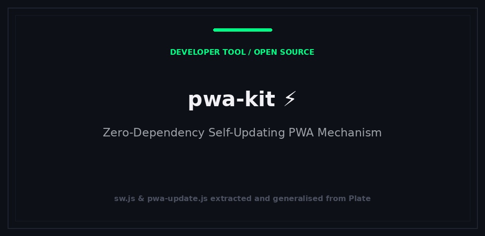

Hinter den Kulissen
PWA Invite Console
Eine kleine Konsole für Einladungen und Geräte in privaten Web-Apps.
Ein kleiner Update-Helfer mit einem Offline-Fallback für zuvor besuchte Ressourcen.

Ein kleiner Service-Worker-Update-Helfer für Web-Apps mit sichtbarer Update-Meldung und Schutz für noch nicht abgeschlossene Arbeiten.
Kopie sw.js, sw-update.js und pwa-update.js in das Web-Stammverzeichnis der App und binden Sie sie ein. Es gibt weder einen Frontend-Build-Schritt noch Paketabhängigkeiten. Die ZIP-Datei enthält außerdem ein Beispiel und optionale Dateien für die Serverintegration.
Ein neuer Service Worker wird sofort aktiviert. Sichtbare Seiten können das Neuladen bei unvollendeter Arbeit aufschieben; nicht antwortende Clients werden nach einer kurzen Wartezeit neu geladen. Passen Sie die Cache-Richtlinie des Beispiels an, bevor Sie sie für private Inhalte verwenden.
isBusy): Sichtbare Seiten, die antworten, können das Neuladen bei unvollendeten Änderungen aufschieben; wichtige Entwürfe sollten Apps separat speichern.Eine kleine Konsole für Einladungen und Geräte in privaten Web-Apps.

Verwandle ein Foto in verbundene Muster zum Ausschneiden aus Metall.

Ein kleiner Planet in deiner Tasche. Erkunde die Erde mit aktuellen Astronomie- und NASA-Daten.